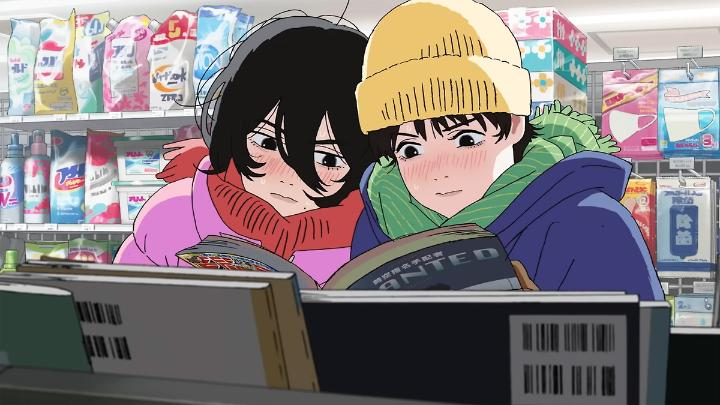

I follow news on new animated films, big and small, and their screenings in case the opportunity to see one occurs. I knew GKIDS licensed "Look Back," a short anime film at only 58 minutes, but otherwise knew little about exactly what it was about. The studio and director were virtually unknown, but fine, I like new voices in animation. A limited one-day screening appeared, so I went to buy a ticket, expecting the typical half-full audience from local anime clubs. But it was sold out, almost entirely for an Asian audience. The popularity led to the theatre extending the release into daily screenings the following week. ... but why? For a Studio Ghibli film, I'd expect this. For a Mamoru Hosoda or Makoto Shinkai film, I might expect this. For known properties like "DragonBall Z," I've seen this happen. But this was a complete unknown, based on a one-shot short manga. Sure, that manga was by Tatuski Fujimoto, enjoying recent global success with "Chainsaw Man," but this movie had no real relation to the franchise. Was word-of-mouth really so powerful? Was this movie really that good? The short answer is yes. The story is about two characters, first in elemntary school. The first is Fujino, a girl that likes drawing funny comics, and produces them regularly for the school newspaper. Kids in her class frequently praise the work, raising her ego to thinking she could make a career of it one day. But a teacher asks if another student who frequently stays at home, Kyomoto, could share the space in the newspaper with her. By comparison, Kyomoto's panels don't have any story, but have beautiful, realistically rendered backgrounds, shocking the class (and realizing how childish Fujino's work looks by comparison). This moment traumatizes Fujino, and compels her to practice every waking moment to improve her drawing, destroying social and academic factors of her life. After doing this for years, she gives up drawing entirely. But then on graduation day, she meets Kyomoto for the first time. What follows is a life-long friendship and collaboration, a coming-of-age story, and a love letter to creators, be it for manga comics, fine art, or animation. Which speaks to virtually everyone in the audience watching anime, either because they want to be artists themselves making the same type of work, or at least modern creators and influencers that can talk about what they are passionate about. The story manages to naturally cover things like passion, despair for not being good enough, drive to be better, and conflicted minds on what direction you want to career to go in life. It's seemless, and speaks from the core.  Without spoiling the full story, there is a shocking and tragic twist in the second half, no doubt at least partially inspired by a certain real-life incident that occured a couple years earlier. I gasped in my seat, not expecting it at all. But I was even more shocked by how the story handles the aftermath to continue the story to the end, with just a hint of magical realism. There was a massive risk for this to feel out of place and exploitive to just get the audience to cry, but no, it managed to stick the landing to provide a somber ending, with the final line being "why do you draw?" For the target audience, this knows where to hit. While the story is about manga, Studio Durian clearly set out to showcase animation with the same passion as the characters for their medium of choice. This is still anime, but doesn't restrict itself to anime-design principles, letting the artists basically do as they please. There are some great wide shots of camera motion, all the more impressive because there's seemingly no 3D animation at all anywhere... everything, for better or for worse, was hand-drawn. If the director was in the audience, I'd want to give him a hug. This passion is present in character motion, sometimes exaggerated just for the sake of fun. Even with darker moments in the story, the movie is surprisingly funny. This is still somewhat grounded, not nearly as wild as something by Studio Trigger or Shaft, but it's otherwise a beautiful work of craft. The Japanese voice cast, led by the two main characters, and the music, is also great, and the interviews with them and the director show a self-awareness and humbleness to admire. "Look Back" is a very pleasant surprise. I'm still torn that the recent trend is to look inwards, with a lot of new animated works involving characters that create comics, cartoons or movies in some form. But this might be the most powerful version of that genre to date. For artists, or for the child inside you who wanted to be an artist... this is for you.
- "Ani" More reviews can be found at : https://2danicritic.github.io/ Previous review: review_Long_Way_North Next review: review_Lord_El-Melloi_II's_Case_Files_-_Rail_Zeppelin_-_Grace_Note